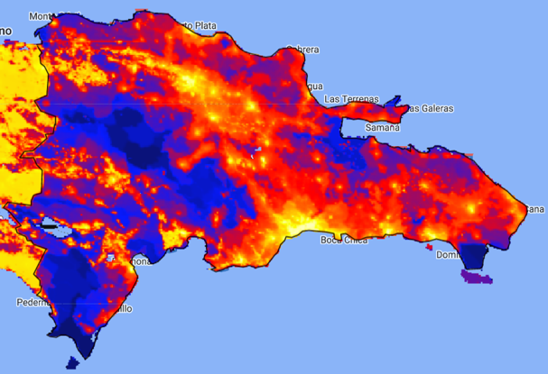
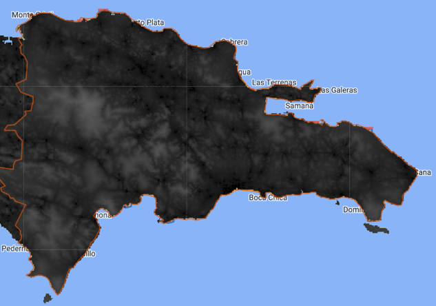

2.9 Creando mapas de las variables satelitales
Durante el proceso de validación del modelo, es fundamental la comparación de los mapas generados con las imágenes disponibles en Google Earth Engine. Para llevar a cabo esta tarea, es necesario realizar la unión entre los polígonos (shapefile) y las data.frame que contienen las variables satelitales. En este sentido, se utiliza el código presentado a continuación para crear los dos objetos: poligonos_promedio y poligonos_suma.
poligonos_promedio <- read_sf( "../shapefiles2010/MUNCenso2010.shp")%>%
dplyr::select(ENLACE) %>% inner_join(satelital_promedio)
poligonos_suma <- read_sf( "../shapefiles2010/MUNCenso2010.shp") %>%
dplyr::select(ENLACE) %>% inner_join(satelital_suma)El objeto poligonos_promedio se genera a partir del shapefile de los municipios y la información de las variables satelitales que se han promediado. Por otro lado, el objeto poligonos_suma se construye de manera similar, pero utilizando la información de las variables satelitales que se han sumado.
El siguiente paso es crear los objeto m1 y m2, para lo cual usamos la función tm_shape de la librería tmap.
m1 <- tm_shape(poligonos_suma)
m2 <- tm_shape(poligonos_promedio)Para crear los mapas se utiliza una sintaxis similar para cada variable, por lo que se haces pocas modificaciones entre los bloques de código.
2.9.1 Modificacion humana
El presente código genera dos mapas utilizando la librería tmap de R. Primero, establece algunas opciones con tmap_options(check.and.fix = TRUE) para verificar y corregir posibles errores.
Luego, se crean dos objetos de mapa m1_modificacion_humana y m2_modificacion_humana, que muestran la variable modificacion_humana en dos formas diferentes: la suma y el promedio. Cada uno de los mapas utiliza tm_polygons() para representar los polígonos del mapa y las variables correspondientes. También establece un título para cada mapa con title y una paleta de colores con palette.
Finalmente, utiliza tmap_arrange() para combinar los dos mapas en una cuadrícula de dos columnas (ncol = 2) y una fila (nrow = 1), y lo guarda en el objeto map_modificacion_humana. Al final se muestra el mapa combinado.
tmap_options(check.and.fix = TRUE)
m1_modificacion_humana<-
m1 + tm_polygons(
"modificacion_humana",
title = "modificacion_humana(suma)",
palette = "YlOrRd"
)
m2_modificacion_humana <-
m2 + tm_polygons(
"modificacion_humana",
title = "modificacion_humana(media)",
palette = "YlOrRd"
)
map_modificacion_humana <- tmap_arrange(list(m1_modificacion_humana,
m2_modificacion_humana),
ncol = 2,
norw = 1)El último paso es guardar el mapa resultante, para este fin se utiliza la sintaxis.
tmap_save(map_modificacion_humana,
"../map_temp/modificacion_humana.jpg",
width = 3000,
height = 2000,
asp = 0
)A continuación se presenta un comparativo entre la información obtenida en Google Earth Engine y la procesada en R, donde se puede apreciar que el uso del promedio de los pixeles es una medida de resumen más adecuada, ya que refleja de mejor manera la información capturada por el satélite. Es importante destacar que esta comparación es esencial para validar el proceso de procesamiento de las variables satelitales, ya que permite verificar que la información obtenida en R se asemeje a la imagen de referencia disponible en Google Earth Engine. De esta manera, se asegura que la información procesada sea lo más cercana posible a la realidad y se evita la toma de decisiones basadas en información errónea.

2.9.2 Accesibilidad hospitales caminado
Para obtener el mapa correspondiente a la variable accesibilidad_hosp_caminado, se sigue un proceso similar al descrito anteriormente. En primer lugar, se crean los objetos m1_accesibilidad_hosp_caminado y m2_accesibilidad_hosp_caminado utilizando la función tm_shape y tm_polygons de la librería tmap, respectivamente. Estos objetos se unen en el objeto map_accesibilidad_hosp_caminado utilizando la función tmap_arrange para mostrar ambas visualizaciones en una misma imagen.
Finalmente, se utiliza la función tmap_save para guardar la imagen resultante en formato PNG. De esta manera, se obtiene un mapa que muestra la accesibilidad a hospitales caminando.
m1_accesibilidad_hosp_caminado<-
m1 + tm_polygons(
"accesibilidad_hosp_caminado",
title = "accesibilidad_hosp_caminado(suma)",
palette = "YlOrRd"
)
m2_accesibilidad_hosp_caminado <-
m2 + tm_polygons(
"accesibilidad_hosp_caminado",
title = "accesibilidad_hosp_caminado(media)",
palette = "YlOrRd"
)
map_accesibilidad_hosp_caminado <-
tmap_arrange(
list(
m1_accesibilidad_hosp_caminado,
m2_accesibilidad_hosp_caminado
),
ncol = 2,
norw = 1
)
tmap_save(map_accesibilidad_hosp_caminado,
"../map_temp/accesibilidad_hosp_caminado.jpg",
width = 3000,
height = 2000,
asp = 0
)La imagen satelital de la variable accesibilidad_hosp_caminado proporciona información sobre los tiempos promedio que una persona tarda en llegar a un hospital o clínica. En la escala de grises utilizada para la gráfica, los tonos más oscuros indican tiempos menores, mientras que los tonos más claros indican tiempos mayores. Al observar la imagen, podemos confirmar que el promedio sigue siendo la medida de resumen que mejor refleja la información capturada por el satélite.


2.9.3 Accesibilidad hospitales
La variable accesibilidad_hospitales mide el tiempo promedio que una persona tarda en llegar a clínicas u hospitales, independientemente del medio de transporte utilizado. Como esta variable utiliza la misma fuente de datos que accesibilidad_hosp_caminado, su interpretación visual en escala de grises es similar, donde los tonos más oscuros indican tiempos menores y los tonos más claros, tiempos mayores.
Después de observar la imagen, se puede confirmar que el promedio sigue siendo la medida de resumen que mejor refleja la información capturada por el satélite. Para obtener el mapa correspondiente a accesibilidad_hospitales, se sigue un proceso similar al descrito previamente: se crean los objetos m1_accesibilidad_hospitales y m2_accesibilidad_hospitales utilizando tm_shape y tm_polygons de la librería tmap, respectivamente. Luego, se unen en el objeto map_accesibilidad_hospitales utilizando tmap_arrange para mostrar ambas visualizaciones en una misma imagen. Finalmente, se utiliza tmap_save para guardar la imagen resultante en formato PNG. De esta manera, se obtiene un mapa que muestra la accesibilidad a hospitales en la zona de estudio.
m1_accesibilidad_hospitales <-
m1 + tm_polygons(
"accesibilidad_hospitales",
title = "accesibilidad_hospitales(suma)",
palette = "YlOrRd"
)
m2_accesibilidad_hospitales <-
m2 + tm_polygons(
"accesibilidad_hospitales",
title = "accesibilidad_hospitales(media)",
palette = "YlOrRd"
)
map_accesibilidad_hospitales <-
tmap_arrange(
list(m1_accesibilidad_hospitales,
m2_accesibilidad_hospitales),
ncol = 2,
norw = 1
)
tmap_save(map_accesibilidad_hospitales,
"../map_temp/accesibilidad_hospitales.jpg",
width = 3000,
height = 2000,
asp = 0
)
2.9.4 Cubrimiento urbano
La imagen satelital representa el cubrimiento urbano, en una escala de tonos que va desde el negro, que indica ausencia de construcciones urbanas, hasta el blanco, que representa la presencia de edificaciones. Esta variable es relevante porque permite identificar las zonas con mayor densidad de población.
Sin embargo, al procesar los datos, se observó que la variable tiene un comportamiento asimétrico y la escala utilizada para representarla no es adecuada para mostrar los detalles más finos de la imagen. Para superar este problema y validar la información obtenida a través de la descarga de datos, se decidió aplicar una transformación logarítmica a la variable. En el siguiente bloque de código se describe el proceso detalladamente para obtener el mapa correspondiente.
m1 <-
tm_shape(poligonos_suma %>%
mutate(cubrimiento_urbano = log(cubrimiento_urbano + 1)))
m2 <-
tm_shape(poligonos_promedio %>%
mutate(cubrimiento_urbano = log(cubrimiento_urbano + 1)))
m1_cubrimiento_urbano <-
m1 + tm_polygons(
"cubrimiento_urbano",
title = "cubrimiento_urbano(suma)",
palette = "YlOrRd"
)
m2_cubrimiento_urbano <-
m2 + tm_polygons(
"cubrimiento_urbano",
title = "cubrimiento_urbano(media)",
palette = "YlOrRd"
)
map_cubrimiento_urbano <- tmap_arrange(
list(m1_cubrimiento_urbano,
m2_cubrimiento_urbano),
ncol = 2,
norw = 1
)
tmap_save(map_cubrimiento_urbano,
"../map_temp/cubrimiento_urbano.jpg",
width = 3000,
height = 2000,
asp = 0
)Como se puede notar la modificación realizada consistió en definir nuevamente los objetos m1 y m2, donde incluimos la transformación logarítmica mediante el comando mutate(cubrimiento_urbano = log(cubrimiento_urbano + 1)). Es de mencionar, que para la variable original se le suma la constante uno para corregir errores del calculo, en caso que la variable posea un valor de cero. Ahora, al realizar la comparación entre las dos imágenes podemos vemos que la media, como medida de resumen muestra una mayor similitud con la mostrada del satélite.
Como se puede notar, la modificación realizada en el código, en la cual se incluyó la transformación logarítmica de la variable cubrimiento_urbano para obtener un mapa que muestre una mejor correspondencia con la imagen satelital original. En primer lugar, se crearon nuevamente los objetos m1 y m2 utilizando el comando tm_shape. A continuación, se aplicó la transformación logarítmica mediante el comando mutate(cubrimiento_urbano = log(cubrimiento_urbano + 1)), donde se suma una constante de uno para evitar errores en el cálculo en caso de que la variable tenga un valor de cero.
Al comparar la imagen obtenida mediante la transformación logarítmica con la imagen satelital original, no es claro cual de las dos imágenes representa de mejor forma la información capturada por el satélite. Dado que, las dos imágenes muestran valores altos en las ciudades principales, sin embargo, la figura de la suma muestra unos municipios en naranja que nos son reflejados por la gráfica obtenida con el promedio.


2.9.5 Cubrimiento cultivo
La variable cubrimiento_cultivo proporciona información sobre las áreas de cultivo presentes en los municipios y su interpretación visual en la imagen satelital es similar a las variables analizadas anteriormente. Los tonos más oscuros indican baja presencia de cultivos, mientras que los tonos más claros indican mayor presencia de cultivos.
Para poder comparar la información de esta variable con la mostrada por Google Earth Engine, fue necesario aplicar una transformación logarítmica, similar a la realizada en la variable cubrimiento_urbano. El objetivo de esta transformación fue facilitar la comparación entre ambas fuentes de información. Al comparar las dos imágenes, no se observa una clara diferencia en cuanto a cuál medida de resumen sería más adecuada, pero se opta por utilizar el promedio como medida de resumen para esta variable.
m1 <-
tm_shape(poligonos_suma %>%
mutate(cubrimiento_cultivo = log(cubrimiento_cultivo + 1)))
m2 <-
tm_shape(poligonos_promedio %>%
mutate(cubrimiento_cultivo = log(cubrimiento_cultivo + 1)))
m1_cubrimiento_cultivo <-
m1 + tm_polygons(
"cubrimiento_cultivo",
title = "cubrimiento_cultivo(suma)",
palette = "YlOrRd"
)
m2_cubrimiento_cultivo <-
m2 + tm_polygons(
"cubrimiento_cultivo",
title = "cubrimiento_cultivo(media)",
palette = "YlOrRd"
)
map_cubrimiento_cultivo <-
tmap_arrange(
list(m1_cubrimiento_cultivo, m2_cubrimiento_cultivo),
ncol = 2,
norw = 1
)
tmap_save(map_cubrimiento_cultivo,
"../map_temp/cubrimiento_cultivo.jpg",
width = 3000,
height = 2000,
asp = 0
)

2.9.6 Luces nocturnas
La última variable que validaremos es la intensidad lumínica o luces nocturnas. La variable fue capturada por el satélite en una resolución de 30 metros por píxel. Los valores de la imagen van desde 0 (sin luces) hasta 63 (máxima cantidad de luces), y se pueden utilizar para analizar patrones de urbanización, así como para estimar el crecimiento de ciudades y la densidad de población. Por tanto, se espera que esta variable sea un reflejo de las densidades posesionales de los municipios.
Al comparar las imágenes vemos que describen y patrón similar dentro del mapa, sin embargo, la suma muestra un alto valor para el municipio de Higüey dado el tamaño del mismo. Por tanto, se opta por el promedio como medida de resumen para la variable luces_nocturnas.
m1_luces <-
m1 + tm_polygons(
"luces_nocturnas",
title = "luces_nocturnas(suma)",
palette = "YlOrRd"
)
m2_luces <-
m2 + tm_polygons(
"luces_nocturnas",
title = "luces_nocturnas(media)",
palette = "YlOrRd"
)
map_luces <- tmap_arrange(list(m1_luces,m2_luces),
ncol = 2,
norw = 1)
tmap_save(map_luces,
"../map_temp/luces.jpg",
width = 6920,
height = 4080,
asp = 0
)